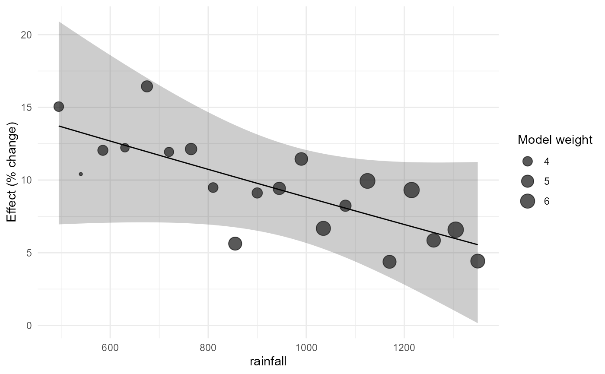
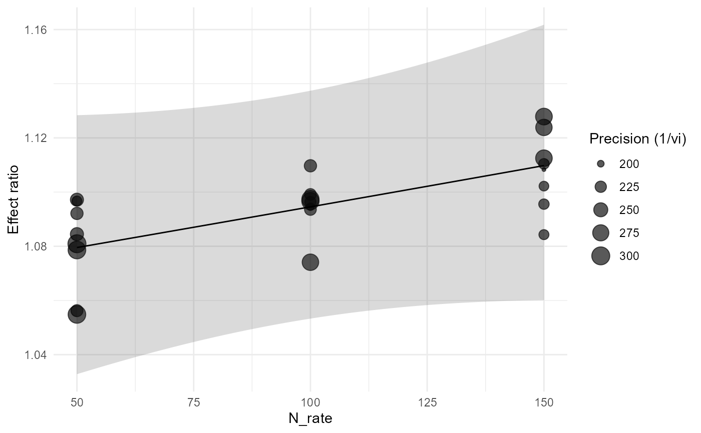

Draw a meta-regression bubble plot
apm_bubble.RdUses observed effect sizes for points and model-derived marginal predictions for the fitted relationship. Point size represents the declared weighting rule rather than a plotting smoother.
Examples
# Example 1: rainfall bubble plot on the percent-change scale.
irr_es <- apm_effect_size(irrigation_climate,"lnRR",m_t=mean_t,sd_t=sd_t,
n_t=n_t,m_c=mean_c,sd_c=sd_c,n_c=n_c)
irr_m <- apm_metareg(irr_es,~rainfall)
apm_bubble(irr_m,rainfall,transform="percent")

# Example 2: soil organic matter as moderator with dependent maize effects.
mz_es <- apm_effect_size(maize_n_shared,"lnRR",m_t=mean_t,sd_t=sd_t,n_t=n_t,
m_c=mean_c,sd_c=sd_c,n_c=n_c)
mz_V <- apm_vcov(mz_es,cluster=experiment_id)
mz_m <- apm_metareg(mz_es,~N_rate+soil_texture,V=mz_V,random=~1|study_id/effect_id)
apm_bubble(mz_m,N_rate,size="precision")

# Example 3: interactive rainfall curve when plotly is installed.
if(requireNamespace("plotly",quietly=TRUE)) apm_bubble(irr_m,rainfall,interactive=TRUE)